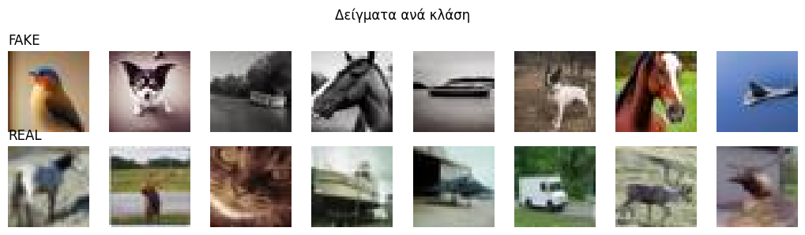

Συμπληρωματική μελέτη · εκτός core scope
Ανίχνευση AI-generated εικόνων στο CIFAKE (32×32)
Επανεξετάζουμε το dataset που το κύριο project απέρριψε ως πολύ μικρό. Η πρόκληση δεν είναι «τι δείχνει» η εικόνα, αλλά τα λεπτά generative artifacts — και ποιος παράγοντας πραγματικά μετράει.

Best full-data acc0.962ViT-B/16 full fine-tune
Best no-fine-tuning0.947CLIP-probe (frozen)
Best 5-shot0.675CLIP-probe (linear)
Μέθοδοι στο benchmark14classical → foundation
Δυαδικό & ισορροπημένο
5.000 / 5.000 (imbalance 1.0). Καμία τεχνική ανισορροπίας· accuracy + F1-macro + confusion matrix.
Το σήμα είναι λεπτό
Real και fake μοιράζονται τις ίδιες κατηγορίες· το διακριτικό σήμα κρύβεται σε υφές υψηλής συχνότητας, όχι στο αντικείμενο.
Γιατί supplementary
32×32 + classical baselines σπάνε τις συμβάσεις του core project (224px, deep-only) — κρατιέται ως contrast.